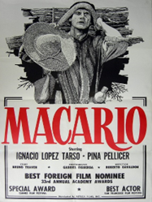
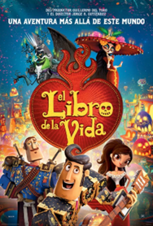

Programa de Cartelera
| Propuesta de Cartelera | ||
|---|---|---|
| Cartel | Pelicula, Genero, Horario y Duracion | Descripcion y Duracion |
 |
Hasta el viento tiene miedo (1968), Horror gótico, 12:00 a 14:00, 1 hora y 30 minutos |
La historia se desarrolla en un internado para señoritas llamado Santa Lucía, que se encuentra aislado en una mansión antigua y sombría en medio de un bosque. El internado es dirigido por la estricta y autoritaria directora Bernarda (interpretada por Marga López), quien impone reglas estrictas y castigos severos a las estudiantes. Las alumnas del internado comienzan a experimentar fenómenos inexplicables y aterradores. |
|  |
Macario (1960), Drama, 14:00 a 16:00, 1 hora y 31 minutos. |
Esta película clásica dirigida por Roberto Gavaldón se basa en una historia corta del escritor mexicano B. Traven. Cuenta la historia de Macario, un campesino que tiene la habilidad de ver y comunicarse con los muertos. La película es una reflexión profunda sobre la vida, la muerte y la cultura mexicana. |
|  |
El libro de la vida (2014), Animada, 16:00 a 18:00, 1 hora y 35 minutos. |
Presenta una historia de amor ambientada en el Día de Muertos. La película sigue a Manolo, un joven torero, mientras viaja a través del mundo de los vivos y los muertos para demostrar su valentía y amor. |
 |
Más negro que la noche (1975), Suspenso, 18:00 a 20:00, 1 hora y 36 minutos. |
Aunque esta película es una película de terror, tiene elementos de la festividad del Día de Muertos. La trama sigue a cuatro mujeres jóvenes que heredan una mansión embrujada donde ocurren eventos sobrenaturales relacionados con el pasado de la casa y la festividad del Día de Muertos. |